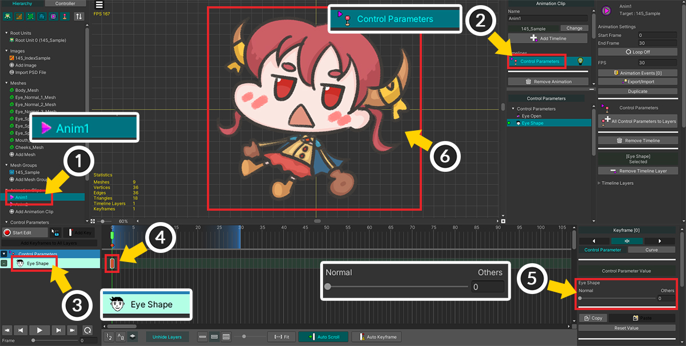
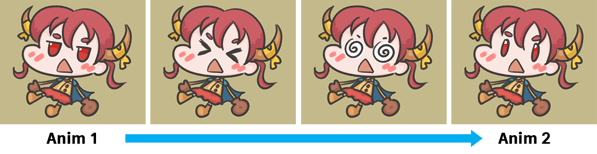
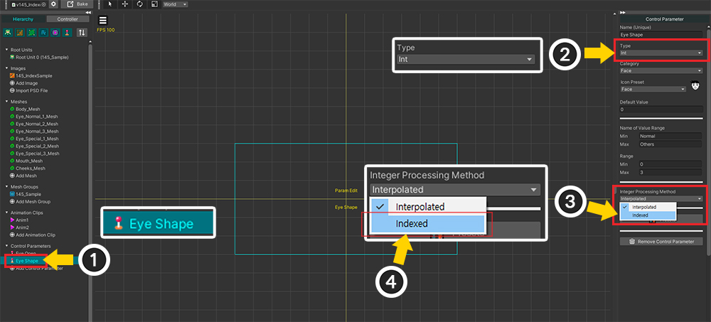
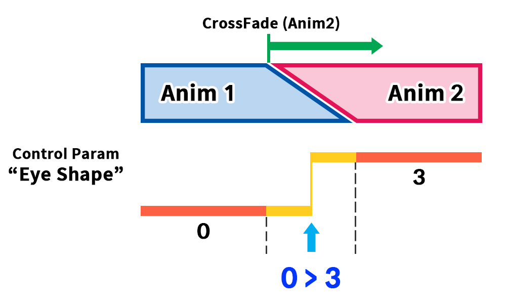
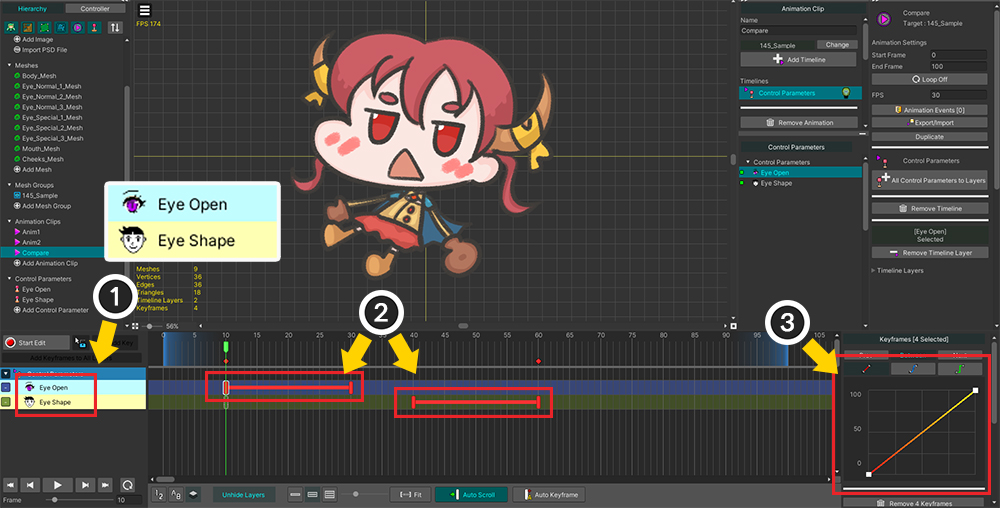
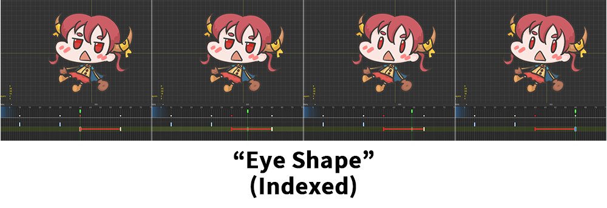
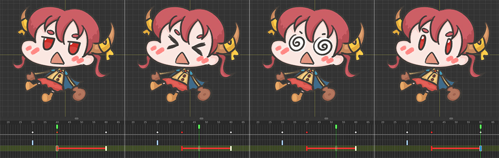

AnyPortrait > マニュアル > 非補間インデックス付きパラメータ
非補間インデックス付きパラメータ
1.4.5
「制御パラメータ」のタイプのうち、「Int」、つまり整数型は、「Float」型とは異なり、不連続な値を持ちます。
したがって、「Int」タイプの制御パラメータは、主に表示されるメッシュや画像を切り替えるときに使用されます。
「Int」型自体は不連続な値を持ちますが、その使い方はしばしば異なる目的を持っています。
制御パラメータの値にそれぞれマッピングされた画像には「順序」があり、逆に「順序」がないこともあります。
「目がちらつく画像シーケンス」や「手を折る画像シーケンス」などは、順序に画像やメッシュを交換する必要がある場合です。
逆に、「感情による顔の表情」、「付属のアクセサリー」などの場合は、順序に関係のない後者に該当します。
いずれにせよ、一般的に「Int」タイプの制御パラメータは一般的にうまく動作します。
しかし、後者、つまり「順序のないメッシュを表示する」は、アニメーションの「補間（Interpolation）」プロセスで問題を引き起こします。
「補間」は、値が「A」から「B」に徐々に変化する演算過程であり、順序を持たないメッシュを入れ替える制御パラメータの値が徐々に変化してしまうことは適切ではない。
アニメーションを再生するか、アニメーション内のキーフレーム間で補間が発生するため、このとき補間に関連する問題が発生する可能性があります。
このページでは、この問題について全体的に説明し、同時にこの問題を解決するために「v1.4.5」で追加された「Indexed」属性について説明します。
画像の「順序」について
「シーケンスを持つメッシュ」と「シーケンスとは無関係のメッシュ」を担当する2つの制御パラメータを生成して比較しましょう。

(1) このページでは「Color Only (Controller)」モディファイアを利用します。
（制御パラメータを使用するすべてのモディファイアで共通の問題が発生する可能性があります。）
(2) 「Int」タイプの制御パラメータを2つ生成し、モディファイアにすべて登録しました。
- Eye Open : 「目を閉じる過程」を表現する3つのメッシュを制御します。
- Eye Shape : 「感情」を表現する4つのメッシュを制御します。
(3) 制御パラメータによって、各メッシュが表示または非表示になります。
2つの制御パラメータによって次のように表示されます。

「Eye Open」パラメータを調整すると、目をゆっくりと巻くキャラクターを見ることができます。
「目を開けた状態」、「少し目を閉じた状態」、「目を閉じた状態」が順に表現される。
つまり、「Eye Open」パラメータで制御されるメッシュには「順序」があります。

「Eye Shape」パラメーターを調整すると、さまざまな感情に応じた表情を見ることができます。
上の図のように、4つの表情は単にそれぞれのパラメータ値にマッピングされているだけで、「順序」を持ちません。
「Eye Open」と「Eye Shape」は同じ「Int」タイプのパラメータであり、メッシュが見えるかどうかを制御する点は同じです。
画像が「順序を持っているかどうか」は異なります。
この違いを認識している場合は、このページで扱う問題について簡単に理解できます。
順序のない画像を制御するとき
このページで扱う問題は、「Int」タイプの制御パラメータが画像やメッシュを切り替えるとき、その画像が「順序を持たない場合」に発生します。
条件は多少複雑に見えますが、例を見ると思ったより一般的に遭遇する可能性がある問題であることがわかります。
前の例で紹介した制御パラメータのうち「Eye Shape」がこの場合に該当するので、この制御パラメータで問題を再現してみましょう。

(1) 2つのアニメーションを作成します。 まず、最初のアニメーション「Anim1」を作成します。
(2) 「Control Parameters」タイムラインを追加します。
(3) 「Eye Shape」をタイムラインに登録します。
(4) キーフレームを1つ生成します。
(5) このアニメーションでは、制御パラメータの値が「0」を持つように設定しました。
キャラクターの「基本の表情」が表示されます。

(1) 2番目のアニメーションを作成しました。 名前は「Anim2」に設定しました。
(2) 同様にタイムラインを構成し、キーフレームを追加します。
(3) 今回は「3」の値を持つように設定しました。
パラメータの値を変更すると、キャラクターの「スマートな表情」が表示されます。
「Bake」の後、Unityシーンで「Anim1」と「Anim2」を順序に再生してみました。
「CrossFade」関数を使用して、アニメーションをゆっくり切り替えます。

Unityシーンで「Anim1」の再生中に「Anim2」が再生されるようにした例の結果です。
アニメーションが「Anim1」から「Anim2」にスムーズに切り替わる途中、意図しない表情が現れます。
「基本の表情」から「スマートな表情」にすぐに移行することを期待していましたが、「驚いた表情」と「めまいの表情」が真ん中に見えます。

この問題は、アニメーション遷移処理中の「補間（Interpolation）」で発生します。
「CrossFade」などのアニメーション再生機能を実行すると、一定時間ゆっくりアニメーション切り替えながら再生が始まります。
上の図では、「Anim1」から「Anim2」に切り替える時間があることがわかります。
制御パラメータ「Eye Shape」の値は「Anim1」では「0」で、「Anim2」が再生されると「3」に変わります。
このとき、アニメーションが切り替わる時間の間、「0」から「3」の間の値が補間されてしまいます。
補間プロセスでは、パラメータは「0 > 1 > 2 > 3」の値を順次持つことになります。これが問題の原因です。
補間プロセス自体はバグではありません。
自然なアニメーション切り替え効果のためには、モーションとモーション間の中間ポーズを計算したり、「Float」や「Vector」タイプの制御パラメータの中間値を計算するためには補間演算が必要だからです。
しかし、特に「順序を持たない画像を切り替えるIntタイプの制御パラメータ」の場合には、この補間プロセスがむしろ間違った結果を作ることです。
この問題を解決するには、制御パラメータに「補間されない」を指定する必要があります。

(1) 「Eye Shape」制御パラメータを選択します。
(2) 「Int」タイプに設定されていることを確認してください。
(3) 「Int」タイプの場合、「Integer Processing Method」オプションが登場します。
このオプションは、「Interpolated」と「Indexed」の値から1つを選択できます。
(4) 「Indexed」を選択します。
それでは、「Bake」をしてUnityシーンで同じようにテストしてみましょう。

「Anim1」から「Anim2」に切り替えると、制御パラメータの中間値は表示されません。
おかげで、「基本の表情」から「スマートな表情」に直接切り替えることができます。

制御パラメータで「Integer Processing Method」属性の値を「Indexed」に設定すると、アニメーション補間時に上記のように演算されます。
「Anim1」から「Anim2」に切り替える過程で中間値をすべて省略し、ただ「開始値（0）」から「到着値（3）」に直ちに切り替えられるので、バグが解決されるのです。
キーフレーム間補間プロセスで比較
この現象はアニメーション切り替えだけでなく、キーフレーム間の補間過程でも見ることができます。
2つの制御パラメータを使用して他の結果がどのように見えるかを見てみましょう。

上記の2つの制御パラメータを互いに異なるように設定しましょう。
順序に画像が切り替わる「Eye Open」の場合、「Integer Processing Method」の値を「Interpolated」（デフォルト）に設定します。
画像間に順序がない「Eye Shape」の場合は、上記のように「Indexed」に設定してください。

比較をするためのアニメーションを構成しましょう。
(1) タイムラインにすべての制御パラメータを追加します。
(2) キーフレーム間の補間プロセスを見るために、上記のようにキーフレームを追加しました。
前のキーフレームには各制御パラメータの最小値、後のキーフレームには最大値を入力しました。
(3) 「アニメーションカーブ」を「線形(Linear)」に変更します。
（もともと、「Int」タイプの制御パラメータの基本曲線は「固定値（Constant）」方式です。これは補間を防ぐことができるからです。）
（アニメーションカーブについては、関連ページでご確認ください。)

「Interpolated」に設定された「Eye Open」の場合、キーフレーム間で制御パラメータの値が「0 > 1 > 2」に徐々に変化することがわかります。
つまり、補間演算が適用され、画像が順序に表示されるように描かれているため、結果は非常に自然です。

「Indexed」に設定された「Eye Shape」の場合、キーフレーム補間中に制御パラメータが中間値を持ちません。
これは、順序がない画像の切り替えに非常に適しています。

「Indexed」に設定されていない場合は、上記のようにキーフレーム補間プロセス中に中間値に対応するメッシュが表示されます。
言い換えれば、制御パラメータによって表される画像が順序に表示されるように描かれているかどうかに応じて、適切に属性を決定することで補間の問題を回避できることがわかる。